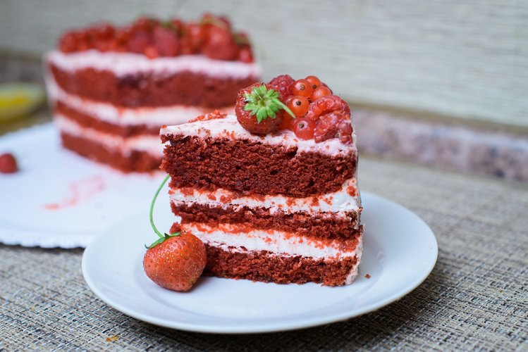

Recette du gâteau "Red Velvet"

Layer cake américain datant de l’époque victorienne, le red velvet cake est une pâtisserie au look étonnant : un gâteau à étages moelleux parfumé au cacao, mais à la couleur rouge, garni d’une crème au mascarpone et au cream cheese, l’incontournable fromage frais Philadelphia, lui aussi américain. En plus d’en mettre plein les yeux, le gâteau est facile à réaliser et délicieusement gourmand. Une recette de rêve pour une fête d’anniversaire, un repas en amoureux ou un dessert original, tout simplement !
Ingrédients :
Pour le gâteau :
- 300g de farine
- 300g de sucre en poudre
- 120g de beurre mou
- 240 mL de lait entier
- 15g de cacao omer
- 2 oeufs
- 1 c. à soupe de vinaigre blanc
- 1,5 c. à café d'extrait de vanille
- 1 c. à café de bicarbonate de soude
- 1 c. à café de colorant rouge
- 1 pincée de sel
Pour le glaçage :
- 300g de Philadelphia
- 250g de Mascarpone
- 200 mL de crème fraîche épaisse
- 110g de sucre glace
- 1 c. à café d'extrait de vanille
Préparation :
1. Préchauffage du four :
Préchauffez le four à 170°C (th. 5/6). Mélangez le lait entier avec le vinaigre blanc et laissez reposer.
2. Préparation de la pâte
Dans un saladier ou au robot, fouettez le beurre mou avec le sucre en poudre. Ajoutez les œufs légèrement battus, puis l'extrait de vanille et le cacao. Mélangez. Incorporez la moitié du lait fermenté avec le vinaigre, la moitié de la farine, le reste de lait puis de farine, en mélangeant entre chaque ajout. Terminez par le colorant rouge, le sel et le bicarbonate. Mélangez bien.
3. Cuisson
Répartissez cette pâte dans trois moules ronds de même diamètre et enfournez pour 30 min. Si vous n'avez qu'un moule, prévoyez trois cuissons successives. Laissez tiédir avant de démouler. Égalisez les bords et aplanissez les surfaces au couteau, en conservant les miettes pour la décoration.
4. Préparation du glaçage
Préparez le glaçage : fouettez le Philadelphia et le mascarpone, puis ajoutez le sucre glace et l'extrait de vanille. Terminez avec la crème fraîche et montez le mélange comme une chantilly, en fouettant jusqu’à obtenir une texture ferme et crémeuse.
5. Montage
Nappez le premier gâteau d'une fine couche de gelée de cerises, puis d’une couche de glaçage. Recouvrez avec le second gâteau, nappez de gelée et de glaçage. Terminez avec le troisième gâteau, nappez de gelée puis recouvrez la totalité du Red velvet cake d’une fine couche de glaçage. Placez au frais pour 30 min.
6. Décoration
Terminez la décoration des côtés avec le reste de glaçage, à l’aide d’une poche à douille ou d’une cuillère. Parsemez le dessus de miettes de gâteau et réservez au frais.
Retour à l’accueil